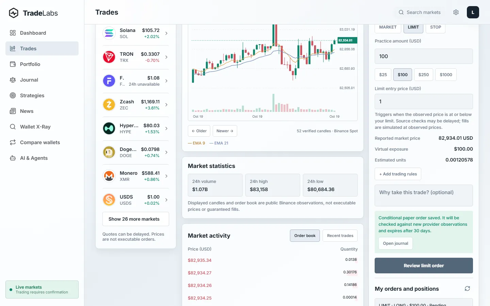
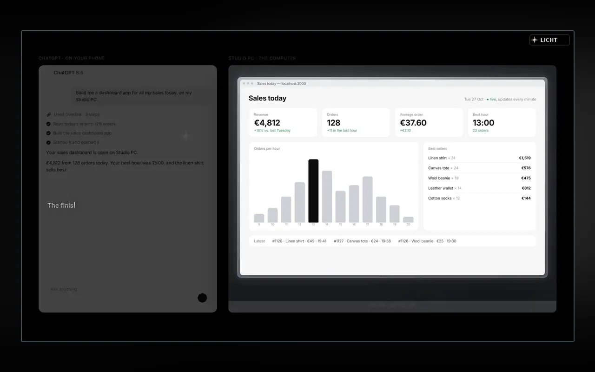
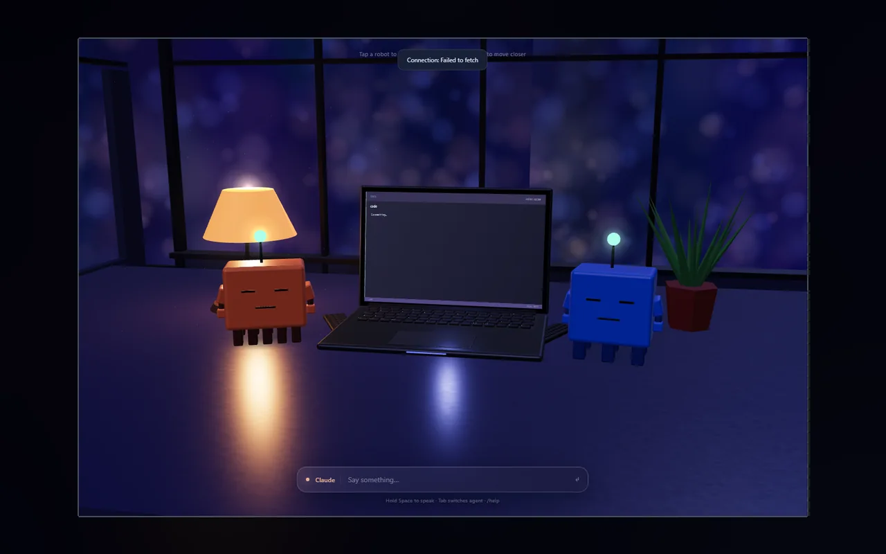
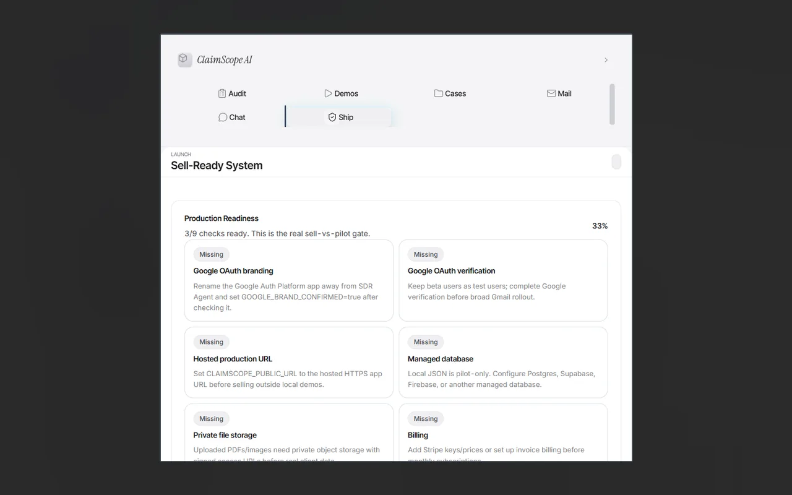

REAL PROJECT CAPTUREPROJECT / 02 · CRYPTO / RESEARCH / ANALYSIS
TradeLabs
The app combines market charts, portfolio tracking, price research and strategies without pretending uncertainty is certainty.
Open project ↗
Your AI, connected to a real computer.
A permission-aware bridge between chat and authorized Windows PCs. Files, desktop tools, browser actions and visible results.

Real interfaces, experiments and visual work. Open a project to read what it does, see how it works and play the original demos where available.

REAL PROJECT CAPTUREThe app combines market charts, portfolio tracking, price research and strategies without pretending uncertainty is certainty.
Open project ↗
REAL PROJECT CAPTUREA virtual night-time workspace with two AI collaborators. The interface connects visual interaction to real coding conversations.
Open project ↗Real conversation windows arranged on a limitless canvas, built around a reflective metallic star.
Open project ↗
REAL PROJECT CAPTUREAn audit tool for roofing insurance estimates. Upload an estimate, inspect possible missing items and prepare a report.
Open project ↗Browse by name or category. Each entry has a practical explanation and a demo or the original project evidence.
Nothing matches that search.